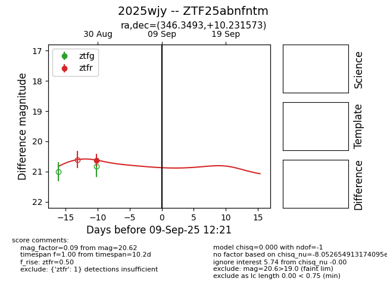

FINK: ZTF25abnfntm
Lasair: ZTF25abnfntm
ALeRCE: ZTF25abnfntm
TNS: 2025wjy
YSE: 2025wjy
ZTF25abnfntm (ztf,fink)
2025wjy (tns,yse)
equatorial (ra, dec) = (346.3493,+10.23157)
galactic (l, b) = (84.8036,-44.64813)

last ztfr=20.62
1 ztfr detections